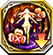

Trust
Trust Skills are obtained from PoL Units. They're not faction locked, and can only be used by PoL Units.
2401014

Abaris アバリス |
ドラゴンホールド |
|---|---|
| 飛行・竜属性ユニットとのデュエル時、相手に追撃が発生しない | |
2101214

Adamas アダマス |
 ダーククイーンズ
ダーククイーンズ
|
| 自身のHPが100上昇し、光属性ユニットへ与えるダメージが50%増加する | |
22000113

Aegis イージス |
 ヘルの大船
ヘルの大船
|
| 連撃攻撃を受ける時、受けるダメージを30%軽減する。地形【水場】の場合、30%ではなく、65%軽減する | |
2103813

Almace アルマス |
 ティターニアの熱情
ティターニアの熱情
|
| 自身のHPが100上昇し、デュエル時、飛行・竜・獣属性ユニットへのダメージが50%増加する。氷属性ユニット装備時、さらにHPが150上昇する※ダメージ増加の効果は飛行・竜・獣属性ユニットを対象にダメージが増加するスキルを所持している場合は発動しない | |
2300414

Amenonuboko 天沼矛 |
ぐるぐる蜻蛉落し |
| 相手が飛行属性・竜属性の場合、命中・回避が20%上昇する ※自身が「神聖プール王国・飛竜覇」および同様の効果のスキルを所持している場合は発動しない | |
2401314

Aphrodite アフロディーテ |
ラブ・ファースト |
| 炎属性ユニットから受けるダメージが30%増加するが、雷属性ユニットへ与えるダメージが80%増加する | |
2400314

Apollon アポロン |
マッシブハープ |
| 敵との距離が離れているほど、自身の物防・魔防が上昇し、3マス以上離れている場合大幅に上昇する。※最大200%まで上昇する | |
2601713

Aqua アクア |
 波間の花鳥風月
波間の花鳥風月
|
| 自身のHPが50、魔攻が25上昇する。炎属性ユニットとのデュエル時、相手に追撃が発生しない。氷属性ユニット装備時、さらにHPが150上昇する | |
2100714

Arondight アロンダイト |
凜として統率 |
| 1ターンの間、選択した味方ユニットに追撃が発生する効果を付与する ※相手が追撃を封じるスキルを所持している場合は追撃が発生しない | |
2400114

Artemis アルテミス |
ドラゴン・テディ |
| デュエル時、飛行・竜属性ユニットへのダメージが300%威力となる ※自身が「ドラゴンダガー」および同様の効果のスキルを所持している場合は発動しない | |
2400124

Artemis アルテミス |
 黒式・愛憎ノ果テ
黒式・愛憎ノ果テ
|
| 射程1の攻撃が可能になるが、射程1での攻撃時、自身に追撃が発生しづらくなり、相手に追撃が発生しやすい ※弓ユニット以外が装備した場合は発動しない | |
2102314

Ascalon アスカロン |
ウィズブレイヴ |
| 自身のデュエルスキル発動率の下限を12%にする | |
2600114

Asclepius アスクレピオス |
 フ増レンス
フ増レンス
|
| 自身のHPが100上昇し、闇属性ユニットへ与えるダメージが50%増加する | |
2200214

Aymur アイムール |
ヴァン★テージ |
| デュエル後にフィールドで受けるダメージを10%軽減する。ダメージを与えたユニットが雷属性の場合、30%軽減する ※状態異常および地形によるダメージは軽減されない | |
2400614

Azusa Yumi 梓弓 |
澄み渡る蒼空の弓 |
| 相手が飛行・竜属性の場合、必殺・必殺回避が20上昇する ※同様の効果のスキルを所持している場合は発動しない | |
2100914

Balmung バルムンク |
風切り裂く龍ノ翼 |
| 相手が氷属性の場合、命中・回避が60上昇する ※自身が「神聖プール王国打ち払い」および同様の効果のスキルを所持している場合は発動しない | |
2500814

Bashosen 芭蕉扇 |
 蝶舞の扇
蝶舞の扇
|
| 自身の回避が35上昇する | |
2500414

Brahmastra ブラフマーストラ |
梵天・諸行無光 |
| 自身の魔攻が25上昇し、光属性ユニットとのデュエル時、相手に追撃が発生しない | |
2500714

Brionac ブリューナク |
ブラインドジェット |
| 相手が闇属性の場合、命中・回避が60上昇する ※自身が「神聖プール王国打ち払い」および同様の効果のスキルを所持している場合は発動しない | |
2600414

Caduceus カドケウス |
エクスケアケイン |
| 自身が所持する回復魔弾の射程を+1する ※杖ユニット以外が装備した場合は発動しない | |
2102614

Caladbolg カラドボルグ |
 天女のインパルス
天女のインパルス
|
| 自身の物攻が25上昇し、氷属性ユニットとのデュエル時、相手に追撃が発生しない | |
2303113

Cassius カシウス |
 ウロボロスの観測
ウロボロスの観測
|
| 自身の命中・回避が30上昇する。デュエル時、相手がハルモニア教皇国ユニットの場合、命中・回避がさらに50上昇する。カシウス装備時、敵ユニットから受けるダメージを1撃まで無効にする。 | |
2303123

Cassius カシウス |
海上遊戯・満たされし円環 |
| ゴッドキラーズ装備時のみ発動。敵ユニットから受けるダメージを2撃まで無効にし、発動時、自身に力・魔が20%上昇する効果を付与する | |
2303133

Cassius カシウス |
ウロボロスの融和 |
| 攻撃を仕掛けられた時、自身の受けるダメージを20%軽減する。地形【水場】にいる場合、運が10%上昇する | |
2602513

Chalice カリス |
 アザゼルの奉仕
アザゼルの奉仕
|
| 自身を除く周囲2マス以内の味方ユニットの麻痺を治癒する。さらに、自身および隣接する味方ユニットの麻痺を次のターン開始時に治癒する効果を自身に付与する | |
2201914

Chiyou シユウ |
いかりのほうでん |
| デュエル後にフィールドで受けるダメージを10%軽減する。ダメージを与えたユニットが氷属性の場合、30%軽減する ※状態異常および地形によるダメージは軽減されない | |
2201614

Cita シタ |
アサルトユニゾン |
| 自身の物攻を35上昇し、HPが80%以上の場合、さらに物攻を15上昇する | |
2102714

Claidheamh Soluis クラウ・ソラス |
絆と共生のフラム |
| 自身および周囲3マス以内の味方ユニットの命中率の下限を、2ターンの間55%にする | |
2200614

Dagda ダグダ |
ブライトバースト |
| 自身の物攻が25上昇し、闇属性ユニットとのデュエル時、相手に追撃が発生しない | |
2102814

Dainsleif ダーインスレイヴ |
ギルティチェイス |
| 周囲7マス以内の敵1体にHP20%分のダメージを与える ※このダメージでは撤退させられない。1バトルで1回のみ使用可能。 | |
2103514

Damocles ダモクレス |
 零式・淡い心の証明
零式・淡い心の証明
|
| 自身のHPが100上昇し、雷属性に与えるダメージが50%増加する。風属性ユニット装備時、さらにHPが150上昇する | |
2103413

Darkness ダクネス |
 水着でも鉄壁
水着でも鉄壁
|
| HPが100上昇し、HP減少値に応じて物防・魔防が上昇する ※最大でHPが30%以下の時、25%上昇する | |
2100314

Durandal デュランダル |
淑女の遇い♪ |
| デュエル後にフィールドで受けるダメージを10%軽減する。ダメージを与えたユニットが炎属性の場合、30%軽減する ※状態異常および地形によるダメージは軽減されない | |
|
2400414
Eros エロース |
猪突激進 |
| 自身のHPが25%以下の場合、敵から攻撃された時先制攻撃になる | |
2101114

Excalibur エクスカリバー |
 ホーリーシフト
ホーリーシフト
|
| 3ターンの間、自身から攻撃を仕掛けた時、自身に追撃が発生する ※1バトルで1回のみ使用可能。相手の所持スキルにより追撃が発動しないことがあります。 | |
2401913

Failnaught フェイルノート |
ルシファーの余興
|
| 自身の命中・回避が30上昇する。デュエル時、相手がトレイセーマ共和国ユニットの場合、命中・回避がさらに50上昇する。フェイルノート装備時、敵ユニットから受けるダメージを1撃まで無効にする。 | |
2401923

Failnaught フェイルノート |
 ルシファーの奔放
ルシファーの奔放
|
| 自身の必殺率下限を10%にする。地形【水場】にいる場合、25%にする | |
2501614

Flabellum フラベルム |
 メテオザエックス
メテオザエックス
|
| 自身および周囲3マス以内の自軍ユニットの命中が50上昇する | |
2301814

Forcas フォルカス |
ヘルストライク |
| デュエルスキル発動時に与えるダメージが15%増加する ※連撃スキルは増加しない ※同様の効果のスキルを所持している場合は発動しない | |
2301823

Forcas フォルカス |
ヘルの天蓋 |
| 自軍「海上編」ユニットが光属性とのデュエル時、相手に与えるダメージが15%上昇する。また、自軍「海上編」ユニットが地形【水場】にいる場合、15%ではなく30%上昇する | |
2101014

Fragarach フラガラッハ |
 カラミティフレイア |
| 1ターンの間、敵軍全ユニットの運を30下降する | |
2500214

Freikugel フライクーゲル |
 ビビット☆マギ
ビビット☆マギ
|
| 自身のHPが200上昇し、魔攻・魔防が10上昇する | |
2500224

Freikugel フライクーゲル |
黒式・満タサレヌ自己愛 |
| 自身のHPが50、魔攻が25上昇する。氷属性ユニットとのデュエル時、相手に追撃が発生しない。雷属性ユニット装備時、さらにHPが150上昇する | |
2502714

Freischutz フライシュッツ |
零式・無垢なる願い
|
| 自身のHPが100上昇し、光属性に与えるダメージが50%増加する。闇属性ユニット装備時、さらにHPが150上昇する | |
2302114

Gae Buidhe ガ・ボー |
ストラグルバン |
| 自身の物攻が25上昇し、光属性ユニットとのデュエル時、相手に追撃が発生しない | |
2300714

Gae Bulg ゲイボルグ |
蝕光覆尽の一突 |
| 光属性ユニットへ与えるダメージが80%増加するが、光属性ユニットから受けるダメージが30%増加する | |
2303213

Gae Dearg ガ・ジャルグ |
 イーリスの祭典
イーリスの祭典
|
| 自身の力が20上昇する。また、攻撃時、25%の確率で1ターンの間、相手に麻痺を付与する | |
2600214

Gambanteinn ガンバンテイン |
 クエイクガード
クエイクガード
|
| 自身を除く周囲3マス以内の味方ユニットの麻痺を治癒し、さらに2ターンの間デュエル時、麻痺に対する100%の耐性を付与する | |
2100814

Gram グラム |
眠竜羽払 |
| 相手が風属性の場合、命中・回避が60上昇する ※自身が「神聖プール王国打ち払い」および同様の効果のスキルを所持している場合は発動しない | |
2303413

Grand Epieu グランテピエ |
 バハムートの呑海
バハムートの呑海
|
| 1ターンの間、自身を含む周囲3マス以内の味方ユニット1体に追撃が発生し、さらに地形【水場】にいる間、追撃が発生する場合、自身の攻撃直後に追撃を行うようになる効果を付与する ※相手が追撃を封じるスキルを所持している場合は追撃が発生しない | |
2302614

Grayside グラーシーザ |
 零式・正義の信念
零式・正義の信念
|
| 自身のHPが100上昇し、風属性に与えるダメージが50%増加する。炎属性ユニット装備時、さらにHPが150上昇する | |
2600814

Gridarvol グリダヴォル |
ハッピーサバイブ |
| 周囲3マス以内の敵軍リーダーユニットのHP上昇以外のリーダースキル効果を1ターン無効化する ※エネミースキルも対象とする | |
2501714

Grimoire グリモワール |
破滅再来ソロモン |
| 自身を除く味方ユニット1体のコマンドスキル使用回数を1回分回復する | |
2300814

Gungnir グングニル |
神槍☆疾走 |
| 周囲6マス以内の敵ユニット1体が所持している、移動コストを1にするスキルを3ターン封じる | |
2202014

Harpe ハルパー |
エスハレーション |
| 相手が光属性の場合、命中・回避が60上昇する ※自身が「神聖プール王国打ち払い」および同様の効果のスキルを所持している場合は発動しない | |
2302813

Helena ヘレナ |
 ロキの水戯
ロキの水戯
|
| 自身の力が25上昇する。また、自身が槍ユニットの場合、攻撃時、35%の確率で1ターンの間、相手に幻惑を付与する | |
2202514

Hercule エルキュール |
零式・託された思い |
| 自身のHPが100上昇し、闇属性に与えるダメージが50%増加する。光属性ユニット装備時、さらにHPが150上昇する | |
2501313

Homura Akemi 暁美 ほむら |
強固なる決意 |
| クエスト開始から2ターンの間、移動不可・挑発耐性を持つ ※この耐性はデュエル時以外の移動不可・挑発に対しても効果を発揮する | |
2300314

Houtengageki 方天画戟 |
 超熱溶解画戟
超熱溶解画戟
|
| 自身のHPが100上昇し、氷属性ユニットへ与えるダメージが50%増加する | |
2402013

Hyoha ヒョウハ |
テュールの勇躍 |
| 自軍「海上編」ユニットが風属性とのデュエル時、相手に与えるダメージが15%上昇する。また、自軍「海上編」ユニットが地形【水場】にいる場合、15%ではなく30%上昇する | |
2402213

Ichiibal イチイバル |
 オーディンの著述
オーディンの著述
|
| クエスト開始から2ターンの間、行動不可耐性を持つ ※この耐性はデュエル時以外の行動不可に対しても効果を発揮する | |
2301414

Ithuriel イシューリエル |
 グラデュアリアイズ
グラデュアリアイズ
|
| 闇属性ユニットへ与えるダメージが50%増加し、1ターン毎に自身の物防が5上昇する ※最大30まで上昇する ※コロシアムでは発動しない | |
2500114

Keraunos ケラウノス |
ヒットオンフリント |
| 相手が炎属性の場合、命中・回避が60上昇する ※自身が「神聖プール王国打ち払い」および同様の効果のスキルを所持している場合は発動しない | |
|
2600514
Kerykeion ケーリュケイオン |
域外ノ悪夢 |
| 自身が所持する攻撃魔弾の射程を+1する ※杖ユニット以外が装備した場合は発動しない | |
2100414

Kusanagi No Tsurugi 草薙剣 |
 重装避雷殿軍
重装避雷殿軍
|
| 自身の物攻が25上昇し、雷属性ユニットとのデュエル時、相手に追撃が発生しない | |
2301513

Kyoko Sakura 佐倉 杏子 |
 飾らない心
飾らない心
|
| クエスト開始から2ターンの間、封印・出血耐性を持つ ※この耐性はデュエル時以外の封印・出血に対しても効果を発揮する | |
2200314

Labrys ラブリュス |
あつあつストッパブル |
| 自身のHPが100上昇し、炎属性ユニットへ与えるダメージが50%増加する | |
2100214

Laevateinn レーヴァテイン |
 ムカつくし！
ムカつくし！
|
| 自身の必殺を20上昇する。さらにターン開始時に、最大HPの30%分自身のHPを回復する | |
2100224

Laevateinn レーヴァテイン |
 黒式・臥セル闘争心
黒式・臥セル闘争心
|
| 自身のHPが50、物攻が25上昇する。氷属性ユニットとのデュエル時、相手に追撃が発生しない。雷属性ユニット装備時、さらにHPが150上昇する | |
2100233

Laevateinn レーヴァテイン |
 バハムートの鉤爪
バハムートの鉤爪
|
| HPを20%消費して発動。周囲5マス以内の敵1体と、その周囲2マス以内にいる敵にHP30%分のダメージを与える※このダメージでは撤退させられない。また、HP20%以下の場合は使用できない | |
2100243

Laevateinn レーヴァテイン |
海上遊戯・献身への恩返し |
| 自軍リル姫のHPが300上昇する※自軍に同じスキルを装備しているユニットが多いほど、重複して効果が発動する | |
|
2100514
Littu リットゥ |
ラジアントファイア |
| 自身のHPが100上昇し、光属性ユニットへ与えるダメージが50%増加する | |
2503713

Logistille ロジェスティラ |
スクルドの企図 |
| クエスト開始から2ターンの間、麻痺耐性を持つ ※この耐性はデュエル時以外の麻痺に対しても効果を発揮する | |
2300114

Longinus ロンギヌス |
 パートナーリンク
パートナーリンク
|
| 自軍全ユニットのHPが40、力・魔・守・精が2上昇する ※自軍に同じスキルを装備しているユニットが多いほど、重複して効果が発動する | |
2300124

Longinus ロンギヌス |
 黒式・羨望ノ彼方二
黒式・羨望ノ彼方二
|
| 自身のHPが50、物攻が25上昇する。炎属性ユニットとのデュエル時、相手に追撃が発生しない。氷属性ユニット装備時、さらにHPが150上昇する | |
2300133

Longinus ロンギヌス |
海上遊戯・健気な手当て |
| 自身を含む周囲3マス以内の味方ユニットの出血・忘却を治癒し、HPを最大HPの20%分回復する | |
2300514

Luin ルーン |
揮神の如く |
| 1ターンの間、周囲3マス以内の味方ユニットの命中率を100%にする ※デュエル相手がダメージを無効化する効果を所持している場合は、ダメージを与えられない | |
2401113

Madoka Kaname 鹿目 まどか |
無垢なる想い |
| クエスト開始から2ターンの間、出血・忘却耐性を持つ ※この耐性はデュエル時以外の出血・忘却に対しても効果を発揮する | |
2501413

Mami Tomoe 巴 マミ |
優雅なる乙女 |
| クエスト開始から2ターンの間、移動不可・封印耐性を持つ ※この耐性はデュエル時以外の移動不可・封印に対しても効果を発揮する | |
2100114

Masamune マサムネ |
凌駕行軍断 |
| 周囲3マス以内の敵軍ユニットの速が5下降する | |
2100124

Masamune マサムネ |
 黒式・怒髪天衝
黒式・怒髪天衝
|
| 自身のHPが50、物攻が25上昇する。風属性ユニットとのデュエル時、相手に追撃が発生しない。炎属性ユニット装備時、さらにHPが150上昇する | |
2500614

Megiddo メギド |
殺風の魔眼 |
| 自身の魔攻が25上昇し、風属性ユニットとのデュエル時、相手に追撃が発生しない | |
2502513

Megumin めぐみん |
ひと夏の爆裂道 |
| HPが100上昇し、HP減少値に応じて魔攻が上昇する ※最大でHPが30%以下の時、50%上昇する | |
2302514

Minerva ミネルヴァ |
 零式・深謀の瞳
零式・深謀の瞳
|
| 自身のHPが100上昇し、氷属性に与えるダメージが50%増加する。雷属性ユニット装備時、さらにHPが150上昇する | |
2600614

Mistilteinn ミストルティン |
 アンリミテッドグロー
アンリミテッドグロー
|
| 自身の魔攻が25上昇し、闇属性ユニットとのデュエル時、相手に追撃が発生しない | |
2200514

Mitum ミトゥム |
 討風迅速縦走術
討風迅速縦走術
|
| 自身のHPが100上昇し、風属性ユニットへ与えるダメージが50%増加する | |
2200114

Mjolnir ミョルニル |
 チェイスレジスト
チェイスレジスト
|
| 自身のHPが100上昇し、毒・麻痺に対する20%の耐性を得る | |
2104213

Morabeaga モラベガ |
 ピスカの遊泳
ピスカの遊泳
|
| 自身のHPが200上昇する。風・光ユニットとのデュエル時、相手に追撃が発生しない | |
2102514

Muramasa ムラマサ |
猛威鍛鉄演舞 |
| 自身の物攻が50上昇し、物防が15下降する。自身のHPが30%以下に減少すると、物攻がさらに15上昇する | |
2104613

Murgleys ミュルグレス |
トールの胆力 |
| 自軍「海上編」ユニットが氷属性とのデュエル時、相手に与えるダメージが15%上昇する。また、自軍「海上編」ユニットが地形【水場】にいる場合、15%ではなく30%上昇する | |
2100614

Naglering ナーゲルリング |
ハイドビリーヴ |
| 1ターンの間、敵軍全ユニットのデュエルスキルの威力を20%下げる ※連撃は1撃あたりの威力を7%ずつ下げる | |
2602014

Ness ネス |
 零式・理性の羅針盤
零式・理性の羅針盤
|
| 自身のHPが100上昇し、炎属性に与えるダメージが50%増加する。氷属性ユニット装備時、さらにHPが150上昇する | |
2203113

Nyoikinkobou 如意金箍棒 |
 フリッグの美果
フリッグの美果
|
| 自軍「海上編」ユニットが炎属性とのデュエル時、相手に与えるダメージが15%上昇する。また、自軍「海上編」ユニットが地形【水場】にいる場合、15%ではなく30%上昇する | |
2603213

Orpheus オルフェウス |
フォルセティの夕凪 |
| 自軍「海上編」ユニットが雷属性とのデュエル時、相手に与えるダメージが15%上昇する。また、自軍「海上編」ユニットが地形【水場】にいる場合、15%ではなく30%上昇する | |
2400814

Othinus オティヌス |
雷速マイウェイ |
| 氷属性ユニットへ与えるダメージが50%増加し、1ターン毎に自身の魔防が5上昇する ※最大30まで上昇する ※コロシアムでは発動しない | |
2202213

Pangu 盤古 |
暗雲を断つ斧 |
| 自身の物攻が25上昇し、弓・銃・杖ユニットとのデュエル時、相手に追撃が発生しない。さらに、【水場】の場合、全てのユニットとのデュエル時、相手に追撃が発生しない | |
2101314

Paracelsus パラケルスス |
ストレージダガー |
| 相手が雷属性の場合、命中・回避が60上昇する ※自身が「海浜ビーチ帝国打ち払い」および同様の効果のスキルを所持している場合は発動しない | |
2200414

Parashu パラシュ |
茜薔薇の残虐な棘 |
| デュエル時、獣属性ユニットへのダメージが300%威力となる ※自身が「ストライク・ザ・ビースト」および同様の効果のスキルを所持している場合は発動しない | |
|
2200424
Parashu パラシュ |
 黒式・飽クナキ理想
黒式・飽クナキ理想
|
| 自身のHPが50、物攻が25上昇する。雷属性ユニットとのデュエル時、相手に追撃が発生しない。風属性ユニット装備時、さらにHPが150上昇する | |
2200814

Perun ペルーン |
マイティカバー |
| 防御時に発動。15%の確率で、自身がデュエル時に受けるダメージを無効化する ※麻痺時は発動しない。また、自身が「神聖プール王国の障壁」を所持している場合は発動しない | |
2400214

Pinaka ピナーカ |
 気合バーニング
気合バーニング
|
| 自身のHPが200上昇し、物攻・物防が10上昇する | |
2302014

Pisear ピサール |
 避風スプリント
避風スプリント
|
| 自身の物攻が25上昇し、風属性ユニットとのデュエル時、相手に追撃が発生しない | |
2601414

Ptah プタハ |
母なる福音 |
| デュエル後にフィールドで受けるダメージを15%軽減する。ダメージを与えたユニットが光属性の場合、35%軽減する ※状態異常および地形によるダメージは軽減されない | |
2103614

Ragnarok ラグナロク |
 旗幟の責務
旗幟の責務
|
| 自身のHPが200上昇し、魔攻・物防・魔防が10上昇する | |
2201314

Reseph レシェフ |
緋衣の五感 |
| デュエル後にフィールドで受けるダメージを15%軽減する。ダメージを与えたユニットが風属性の場合、35%軽減する ※状態異常および地形によるダメージは軽減されない | |
2301014

Rhongomyniad ロンゴミアント |
 グランドランサー
グランドランサー
|
| 周囲2マス以内の敵ユニット全員に50ダメージを与える ※このダメージでは撤退させられない | |
2203013

Risanautr リサナウト |
 クロノスの想起
クロノスの想起
|
| デュエル時、騎乗ユニットへのダメージが125%威力となる。リサナウト装備時は、ダメージが200%威力となる | |
2502414

Saika 雑賀 |
風見八咫鳥 |
| 風属性ユニットへ与えるダメージが50%増加し、1ターン毎に自身の魔防が5上昇する ※最大30まで上昇する ※コロシアムでは発動しない | |
2102013

Sayaka Miki 美樹 さやか |
 真っ直ぐな思い
真っ直ぐな思い
|
| クエスト開始から2ターンの間、忘却・挑発耐性を持つ ※この耐性はデュエル時以外の忘却・挑発に対しても効果を発揮する | |
2502114

Sefer セファー |
 ウィズダムセーブ
ウィズダムセーブ
|
| 自身の魔攻が25上昇し、炎属性ユニットとのデュエル時、相手に追撃が発生しない | |
2300914

Seiryuengetsutou 青龍偃月刀 |
積乱散風斬 |
| 雷属性ユニットへ与えるダメージが50%増加し、1ターン毎に自身の魔防が5上昇する ※最大30まで上昇する ※コロシアムでは発動しない | |
|
2200714
Sharur シャルウル |
遮光配慮 |
| デュエル後にフィールドで受けるダメージを10%軽減する。ダメージを与えたユニットが光属性の場合、30%軽減する ※状態異常および地形によるダメージは軽減されない | |
2400714

Shekinah シェキナー |
ブルトザパニッシュ |
| 相手が獣属性の場合、命中・回避が20%上昇する ※自身が「大地の支配」および同様の効果のスキルを所持している場合は発動しない | |
2601314

Sistrum シストルム |
マジックキャット |
| 自身の魔攻が20上昇する。さらに自軍フェーズ開始時、自身のHPが最大HPの30%分回復する | |
2503113

Solomon ソロモン |
アテナの戦略 |
| 周囲7マス以内の敵ユニット1体を選択する。自身および対象ユニットのコマンドスキル効果を解除する | |
2503123

Solomon ソロモン |
 海上遊戯・遊びの最適解
海上遊戯・遊びの最適解
|
| 自身のHPが300上昇する。また、クエスト開始から4ターンの間、地形【水場】で自軍フェーズ開始時、1ターンの間、自身の移動力が3上昇する | |
2401714

Suiha スイハ |
零式・ひと夏の勇気 |
| 自身のHPが150上昇し、デュエル時に毒・麻痺に対して50%の耐性を得る | |
2502014

Tathlum タスラム |
 閃弾ロックアウト
閃弾ロックアウト
|
| 闇属性ユニットへ与えるダメージが50%増加し、1ターン毎に自身の魔防が5上昇する ※最大30まで上昇する ※コロシアムでは発動しない | |
2201214

Thrand スラーンド |
レッドザサバイブ |
| 炎属性ユニットへ与えるダメージが50%増加し、1ターン毎に自身の物防が5上昇する ※最大30まで上昇する ※コロシアムでは発動しない | |
2600314

Thyrsos テュルソス |
酒酔修羅喝采陣 |
| 自身の魔攻が50上昇するが、魔防が15下降する。自身のHPが30%以下に減少すると、魔攻がさらに15上昇する | |
2503213

Tiphereth ティファレト |
ミカエルの光浴
|
| 自身の命中・回避が30上昇する。デュエル時、相手がケイオスリオン帝国ユニットの場合、命中・回避がさらに50上昇する。ティファレト装備時、敵ユニットから受けるダメージを1撃まで無効にする。 | |
2503223

Tiphereth ティファレト |
ミカエルの慈悲 |
| 自身のデュエルスキル発動率の下限を10%にする。地形【水場】にいる場合、25%にする。 | |
2302414

Tonbokiri 蜻蛉切 |
撃摂柳槍 |
| デュエル時、受けたダメージの15%を回復する ※敵のダメージでHP0になった場合は回復しない。また、自身が「神聖プール王国の抱擁」および同様の効果を所持している場合は発動しない | |
2300214

Trident トライデント |
スターウェイラン |
| 自身の物攻が25上昇し、炎属性ユニットとのデュエル時、相手に追撃が発生しない | |
2300614

Trishula トリシューラ |
 呑雷のウロボロス
呑雷のウロボロス
|
| 自身のHPが100上昇し、雷属性ユニットへ与えるダメージが50%増加する | |
2101414

Tyrhung ティルフィング |
ショックトゥラブ |
| 連撃デュエルスキル発動時に与えるダメージが5%増加する ※連撃以外のデュエルスキルは増加しない ※同様の効果のスキルを所持している場合は発動しない | |
2101424

Tyrhung ティルフィング |
 黒式・渇望ノ眼光
黒式・渇望ノ眼光
|
| 自身のHPが50、物攻が25上昇する。闇属性ユニットとのデュエル時、相手に追撃が発生しない。光属性ユニット装備時、さらにHPが150上昇する | |
2101433

Tyrhung ティルフィング |
 コネクト・アクア
コネクト・アクア
|
| 自身の物攻が20上昇する。さらに自軍フェーズ開始時、自身および周囲3マス以内の味方ユニットのHPを最大HPの10%分回復する | |
2101443

Tyrhung ティルフィング |
海上遊戯・未知への挑戦 |
| 自軍「海上編」ユニットが闇属性とのデュエル時、相手に与えるダメージが15%上昇する。また、自軍「海上編」ユニットが地形【水場】にいる場合、15%ではなく30%上昇する | |
2201014

Ukonvasara ウコンバサラ |
 ヴィガ・メルト
ヴィガ・メルト
|
| 氷属性ユニットへ与えるダメージが50%増加し、1ターン毎に自身の物防が5上昇する ※最大30まで上昇する ※コロシアムでは発動しない | |
2500514

Vajra ヴァジュラ |
 不惜身命ビーナス
不惜身命ビーナス
|
| 自身の魔防が35上昇し、HPが50%以下に減少すると、魔防がさらに15上昇する | |
2601114

Vanargand ヴァナルガンド |
アレイスタークロー |
| 自身の魔攻が25上昇し、雷属性ユニットとのデュエル時、相手に追撃が発生しない | |
2201114

Vazra ワズラ |
 ギガフラッシュ
ギガフラッシュ
|
| 闇属性ユニットへ与えるダメージが80%増加するが、闇属性ユニットから受けるダメージが30%増加する | |
2601813

Wiz ウィズ |
常夏アンデッド |
| 自軍このすばユニットのHPが100、力・魔が3上昇する※自軍に同じスキルを装備しているユニットが多いほど、重複して効果が発動する | |
2301714

Wotan ヴォータン |
キングクラウン |
| 光属性ユニットへ与えるダメージが50%増加し、1ターン毎に自身の物防が5上昇する ※最大30まで上昇する ※コロシアムでは発動しない | |
2201714

Yagrush ヤグルシ |
フォーチュンバズーカ |
| 自身に隣接する味方が多いほど、自身の運が上昇する ※1体あたり8上昇し、最大で32上昇する | |
2500314

Yata No Kagami 八咫鏡 |
 妖かし万華鏡
妖かし万華鏡
|
| 自身の魔攻を35上昇し、HPが80%以上の場合、さらに魔攻を15上昇する | |
2400514

Yoichi 与一 |
 戦意高揚の鏑矢
戦意高揚の鏑矢
|
| 自身の物攻を20上昇する。さらにターン開始時に自身のHPが回復する | |
2502613

Yunyun ゆんゆん |
波打ち際の挑戦状
|
| 自身の魔が20上昇する。また、攻撃時、25%の確率で1ターンの間、相手に麻痺を付与する |